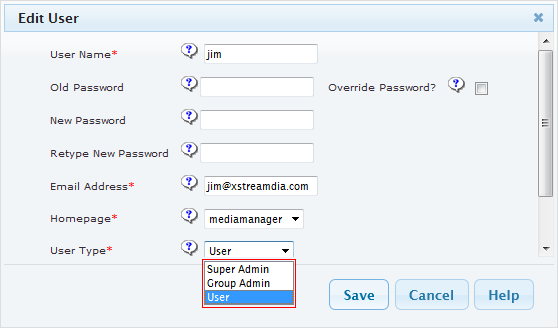

Each xibo user can be associated to a specific user type hence inherited the corresponding access right to the system.

Xibo features 3 different user type.
Each user type gives an appropriate level of permissions within Xibo.
Super Admin users have access to every part of Xibo. They also have access to all the content, playlists and schedules added by other users of the system.
In most cases there will be one or two Super Admins that are the last contact point for the Xibo system. It should be noted that the Super Admin has permissions to every part of Xibo regardless of the permissions set on the User group they belong to.
The xibo_admin account created during the install is a Super Admin.
The group admin only has access to the parts of Xibo assigned to the group they belong to. However they also have access to all the content, playlists and schedule of users within that group. They are able to view shared items that have the public sharing setting.
The user only has access to the parts of Xibo assigned to the group they belong to. They also only have access to their own content, playlists and schedules. They are able to view shared items that have the public or group sharing setting.